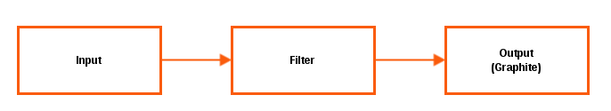

| z, ? | toggle help (this) |
| space, → | next slide |
| shift-space, ← | previous slide |
| b | blank screen |
| d | toggle debug mode |
| ## <ret> | go to slide # |
| c, t | table of contents (vi) |
| f | toggle footer |
| g | toggle follow |
| r | reload slides |
| n | toggle notes |
| p | run preshow |
| P | toggle pause |
| s | choose style |
Graphite + Grafana | Time Series Metrics
created by NETWAYS GmbH
Original Authors: Blerim Sheqa & Markus Waldmüller
Graphite + Grafana Training
by NETWAYS GmbH (www.netways.de)
Graphite + Grafana Training
by NETWAYS GmbH (www.netways.de)
Graphite + Grafana Training
by NETWAYS GmbH (www.netways.de)
Graphite + Grafana Training
by NETWAYS GmbH (www.netways.de)
Graphite + Grafana Training
by NETWAYS GmbH (www.netways.de)
Graphite + Grafana Training
by NETWAYS GmbH (www.netways.de)
Graphite + Grafana Training
by NETWAYS GmbH (www.netways.de)
Graphite + Grafana Training
by NETWAYS GmbH (www.netways.de)
Graphite + Grafana Training
by NETWAYS GmbH (www.netways.de)
Graphite + Grafana Training
by NETWAYS GmbH (www.netways.de)
Graphite is not just a single product. It consists of multiple components which work together to build a complete performance monitoring solution.
Website: https://graphiteapp.org
Project: https://github.com/graphite-project
Docs: http://graphite.readthedocs.org/
Graphite + Grafana Training
by NETWAYS GmbH (www.netways.de)
Project: http://influxdb.com
Docs: http://influxdb.com/docs
Graphite + Grafana Training
by NETWAYS GmbH (www.netways.de)
Project: http://opentsdb.net
Docs: http://opentsdb.net/docs/build/html
Graphite + Grafana Training
by NETWAYS GmbH (www.netways.de)
Project: https://collectd.org
Docs: https://collectd.org/documentation.shtml
Graphite + Grafana Training
by NETWAYS GmbH (www.netways.de)
Icinga is actually a tool for active monitoring, which tells you if your services have any problems. As a part of this monitoring most of the plugins are able to deliver also performance data which can be stored in Graphite (Carbon).
Project: https://www.icinga.com
Docs: https://www.icinga.com/resources/docs
Graphite + Grafana Training
by NETWAYS GmbH (www.netways.de)
The logs processed with logstash can be filtered and forwarded to Graphite. Doing this you can tap metrics even from logfiles generated by Apache, Nginx or other applications.
Project: https://www.elastic.co/products/logstash
Docs: http://www.elastic.co/guide/en/logstash/current/index.html
Graphite + Grafana Training
by NETWAYS GmbH (www.netways.de)
StatsD is most interesting for developers since it is very easy to embed code which sends metrics to a central StatsD.
Graphite + Grafana Training
by NETWAYS GmbH (www.netways.de)
Graphite + Grafana Training
by NETWAYS GmbH (www.netways.de)
Graphite + Grafana Training
by NETWAYS GmbH (www.netways.de)
Graphite is a scalable system which provides realtime graphing. Graphite was originally developed by Chris Davis from orbitz.com, where it was used to visualize business-critical data. Graphite is not a single application, it consists of multiple components which together provide a fully functional performance monitoring solution.
Parts of Graphite:
Graphite was published in 2008 under the "Apache 2.0" license.
Graphite + Grafana Training
by NETWAYS GmbH (www.netways.de)
Carbon Cache accepts metrics and provides a mechanism to cache those for a defined amount of time. It uses the underlying Whisper libraries to store permanently to disk. In a growing environment with more I/O a single carbon-cache process may not be enough. To scale you can simply spawn multiple Carbon Caches.
Graphite + Grafana Training
by NETWAYS GmbH (www.netways.de)
Carbon Aggregator sits in front of Carbon Cache and receives metrics. The function of this daemon is to aggregate the data it receives and forwards it to Carbon Cache for permanent storage. For instance it can sum statistics of multiple servers into one metric.

Graphite + Grafana Training
by NETWAYS GmbH (www.netways.de)
Carbon Relay is a kind of "loadbalancer" for Carbon Cache and/or Aggregator. It can forward metrics based on consistent hashes or with defined regex rules.

Graphite + Grafana Training
by NETWAYS GmbH (www.netways.de)
Graphite Web is the visualizing component. To create graphics, it obtains the data simultaneously from the related Whisper files and the Carbon Cache. Graphite Web combines data points from both sources and returns a single image. By doing this it ensures that data always can be shown in real time, even if some data points are not written yet into Whisper files and therefore written on the hard drive.
Graphite + Grafana Training
by NETWAYS GmbH (www.netways.de)
Graphite + Grafana Training
by NETWAYS GmbH (www.netways.de)

Graphite + Grafana Training
by NETWAYS GmbH (www.netways.de)
Graphite + Grafana Training
by NETWAYS GmbH (www.netways.de)
graphing1 is the primary training VMgraphing2 is used for Cluster setup| Instance | IP | Login |
|---|---|---|
| graphing1 | 192.168.56.101 | training/netways (sudo su) |
| graphing2 | 192.168.56.102 | training/netways (sudo su) |
VirtualBox user manual: https://www.virtualbox.org/manual/UserManual.html
Graphite + Grafana Training
by NETWAYS GmbH (www.netways.de)
Systemd as init systemFirewalld (Stopped)SELinux (Permissive)Graphite + Grafana Training
by NETWAYS GmbH (www.netways.de)
Graphite + Grafana Training
by NETWAYS GmbH (www.netways.de)
Puppet module: https://forge.puppetlabs.com/dwerder/graphite
Installing Graphite on Windows is unsuported and definitely not suggested!
Graphite + Grafana Training
by NETWAYS GmbH (www.netways.de)
PyPI:
Binary package:
In this course we've decided to do the installation from PyPI via pip. So the attendees will get a better understanding of the Graphite components and how they work together.
Graphite + Grafana Training
by NETWAYS GmbH (www.netways.de)
To prepare the Graphite installation we need to install some required packages first:
# yum install python2-pip gcc
# yum install python-devel cairo-devel libffi-develRequired packages for Graphite Web:
# yum install python-scandir
# yum install mod_wsgiAn exported shell variable will simplify the navigation when copying or moving files around:
# export GRAPHITE=/opt/graphiteGraphite + Grafana Training
by NETWAYS GmbH (www.netways.de)
After all requirements are fulfilled, the installation of the Graphite components is pretty simple.
# pip install carbon==1.0.1
# pip install whisper==1.0.1
# pip install graphite-web==1.0.1Graphite + Grafana Training
by NETWAYS GmbH (www.netways.de)
Due to a bug in Carbon and Graphite Web >= 1.0.0 Python packages are not stored correctly, so we create symlinks as workaround:
# ln -s $GRAPHITE/lib/carbon-1.0.1-py2.7.egg-info/ \
/usr/lib/python2.7/site-packages/
# ln -s $GRAPHITE/webapp/graphite_web-1.0.1-py.2.7.egg-info/ \
/usr/lib/python2.7/site-packages/Finally pip should list the installed Graphite packages:
# pip list
...
carbon (1.0.1)
graphite-web (1.0.1)
whisper (1.0.1)Graphite + Grafana Training
by NETWAYS GmbH (www.netways.de)
All variations of the Carbon daemon (Cache, Aggregator and Relay) require some basic configuration. The PyPI packages provide for each configuration file at least one example. To be able to start Carbon Cache we need to copy at least two config files.
# cp $GRAPHITE/conf/carbon.conf.example \
$GRAPHITE/conf/carbon.confcarbon.conf includes the basic configuration for all Carbon daemons (Cache, Aggregator and Relay). Options like IP's and ports to bind and some other settings are located here.
# cp $GRAPHITE/conf/storage-schemas.conf.example \
$GRAPHITE/conf/storage-schemas.confstorage-schemas.conf includes configuration about the storage retention of metrics. More details about this will follow.
Graphite + Grafana Training
by NETWAYS GmbH (www.netways.de)
It's time to start the Carbon Cache daemon for the first time:
# $GRAPHITE/bin/carbon-cache.py status
carbon-cache (instance a) is not running
# $GRAPHITE/bin/carbon-cache.py start
Starting carbon-cache (instance a)
# $GRAPHITE/bin/carbon-cache.py status
carbon-cache (instance a) is running with pid 2344Note: With this method Carbon Cache daemon will not be started after a reboot of the system.
Graphite + Grafana Training
by NETWAYS GmbH (www.netways.de)
File: /etc/systemd/system/carbon-cache.service
[Unit]
Description=Graphite Carbon Cache
After=network.target
[Service]
Type=forking
StandardOutput=syslog
StandardError=syslog
ExecStart=/opt/graphite/bin/carbon-cache.py --config=/opt/graphite/conf/carbon.conf \
--pidfile=/var/run/carbon-cache.pid --logdir=/var/log/carbon/ start
ExecReload=/bin/kill -USR1 $MAINPID
PIDFile=/var/run/carbon-cache.pid
[Install]
WantedBy=multi-user.targetStart Carbon Cache daemon with systemd:
# $GRAPHITE/bin/carbon-cache.py stop
# systemctl start carbon-cache.service
# systemctl enable carbon-cache.serviceGraphite + Grafana Training
by NETWAYS GmbH (www.netways.de)
Graphite Web needs some more configuration. In addition to a working Apache 2 virtual host, the WSGI script and a basic configuration is required.
# cp $GRAPHITE/examples/example-graphite-vhost.conf \
/etc/httpd/conf.d/graphite-web.conf
# cp $GRAPHITE/conf/graphite.wsgi.example \
$GRAPHITE/conf/graphite.wsgiGraphite + Grafana Training
by NETWAYS GmbH (www.netways.de)
local_settings.py includes all configuration for the webapp. Here you can enable a memcache daemon and configure multiple Carbon Cache backends. For now we only need to set a secret key which is needed for the database initialization and adjust the time zone.
# cp $GRAPHITE/webapp/graphite/local_settings.py.example \
$GRAPHITE/webapp/graphite/local_settings.pyFile: /opt/graphite/webapp/graphite/local_settings.py
SECRET_KEY = 'random-string'
TIME_ZONE = 'Europe/Berlin'Graphite + Grafana Training
by NETWAYS GmbH (www.netways.de)
We will use a SQLite database which needs to be initialized first:
# PYTHONPATH=$GRAPHITE/webapp django-admin.py \
migrate --settings=graphite.settings --run-syncdbAnd also the static files:
# PYTHONPATH=$GRAPHITE/webapp django-admin.py \
collectstatic --noinput --settings=graphite.settingsThe initialization of the DB also creates a user. This user can later be used to login to Graphite Web and store graphs and dashboards.
Django's command-line utility also provides subcommands to check and test the installed components.
# PYTHONPATH=$GRAPHITE/webapp django-admin.py check \
--settings=graphite.settings
# PYTHONPATH=$GRAPHITE/webapp django-admin.py test \
--settings=graphite.settingsGraphite + Grafana Training
by NETWAYS GmbH (www.netways.de)
The SQLite database and the webapp logs are located in the storage directory, therefore we change the owner to apache.
# chown apache:root $GRAPHITE/storage
# chown apache:apache $GRAPHITE/storage/graphite.dbIt's also important to change the permissions for the log directory, otherwise you will get the error: "populate() isn't reentrant".
# chown -Rf apache:root $GRAPHITE/storage/logGraphite + Grafana Training
by NETWAYS GmbH (www.netways.de)
The default HTTP name for Graphite Web is graphite and configured in graphite-web.conf. In order to access Graphite Web we have to set permissions to the static directory.
File: /etc/httpd/conf.d/graphite-web.conf
<Directory /opt/graphite/static>
Require all granted
</Directory>Finally we can start the Apache webserver:
# systemctl start httpd.service
# systemctl enable httpd.serviceGraphite + Grafana Training
by NETWAYS GmbH (www.netways.de)
To prove if everything worked open your browser with the default URL of Graphite Web: http://graphite
However it's always recommended to have a look at the logs!
/opt/graphite/storage/log/webapp/
/var/log/carbon/
/var/log/httpd/
Graphite + Grafana Training
by NETWAYS GmbH (www.netways.de)
Graphite 0.9.16 on CentOS 7:
# yum install python-carbon python-whisper graphite-web
# systemctl enable carbon-cache.service --nowFile: /etc/graphite-web/local_settings.py
SECRET_KEY = 'random-key'
TIME_ZONE = 'Europe/Berlin'
# python /usr/lib/python2.7/site-packages/graphite/manage.py syncdb
File: /etc/httpd/conf.d/graphite-web.conf
<Directory "/usr/share/graphite">
<IfModule mod_authz_core.c>
# Apache 2.4
# Require local
Require all granted
</IfModule>
...
</Directory>
# chown apache:apache /var/lib/graphite-web/graphite.db
# systemctl enable httpd.service --now
Graphite Web URL: http://graphite-web
Configs: /etc/carbon/ and /etc/graphite-web/
Logs: /var/log/carbon/ and /var/log/httpd/
Graphite + Grafana Training
by NETWAYS GmbH (www.netways.de)
Graphite + Grafana Training
by NETWAYS GmbH (www.netways.de)
Carbon Cache uses Whisper to store the received datapoints. Each datapoint gets paired with its linked timestamp. Data can be stored into multiple archives, where one archive describes the precision and retention of this data.
Graphite + Grafana Training
by NETWAYS GmbH (www.netways.de)

Graphite + Grafana Training
by NETWAYS GmbH (www.netways.de)
In a different way from RRD, Whisper supports updates to time slots with timestamps prior to its most recent one. This means that there is no way with RRD to back-fill data properly.
Whisper is slower than RRD, but fast enough for most purposes. This is the consequence of Whisper being written in Python, where RRD is written in C. The performance is in theory, depending on the operation, 2 to 5 times slower.
In practice the difference is measured in hundreds of microseconds which leads to less than a millisecond difference for most operations. Anyway, storing time-series data always causes high I/O on your disk. Using Carbon Relay you can distribute this load to multiple servers.
Graphite + Grafana Training
by NETWAYS GmbH (www.netways.de)
The metric path determines the hierarchy in which data is being held and can be seen as an address of your data. Each element of the metric path describes also a directory on the filesystem where Whisper files are stored. The last element is the filename.
berlin.dc1.r12.server1.load.longterm
├── berlin
│ └── dc1
│ └── r12
│ ├── server1
│ │ └── load
│ │ └── longterm.wsp
│ │ └── midterm.wsp
│ │ └── shortterm.wsp
│ ├── server2With Graphite Web metrics can be accessed by using globs (wildcards or character lists) in the metric path. Graphite Web will then return the datapoints of all matching metrics.
berlin.*.r12.server1.load.longterm
berlin.dc1.r12.server{1,2,3}.load.longtermGraphite + Grafana Training
by NETWAYS GmbH (www.netways.de)
storage-schemas.conf stores configuration about retention and frequency in which datapoints should be stored. The config file includes multiple sections which are applied from the top to the bottom. Based on patterns it matches metric paths and tells Whisper how to store the data. The first pattern that matches is being applied for the metric path, other sections are ignored.
Graphite + Grafana Training
by NETWAYS GmbH (www.netways.de)
Each section has 3 lines:
Example storage schemas:
[carbon]
pattern = ^carbon\.
retentions = 60:90d
[default]
pattern = .*
retentions = 1s:30m,1m:1d,5m:7dBy aggregating data you can save I/O on your disks. Already created Whisper files will not be affected by configuration changes!
Graphite + Grafana Training
by NETWAYS GmbH (www.netways.de)
When downsampling data Whisper will do an average over a set of datapoints. This behaviour can be changed in storage-aggregation.conf. Like in other configuration files the entries are scanned from top to the bottom and the first match applies to the Whisper files.
Default aggregation entry:
[default_average]
pattern = .*
xFilesFactor = 0.5 # 50 percent
aggregationMethod = averageThis configuration doesn't affect the first archive and already created Whisper files will not be affected by configuration changes!
Graphite + Grafana Training
by NETWAYS GmbH (www.netways.de)
Example storage schema:
1s:30m,1m:1d,5m:7dConvert into seconds:
1s:30m=1s:(30*60)=1s:1800s
1m:1d=60s:(24*60*60)=60s:86400s
5m:7d=(5*60):(7*24*60*60)=300s:604800s12 bytes for each datapoint and 12 bytes of archive information for every retention period:
1800s/1s*12b+12b=21612b
86400s/60s*12b+12b=17292b
604800s/300s*12b+12b=24204b
21612b+17292b+24204b=63108b16 bytes of database metadata:
63108b+16b=63124b/1024=61.64kbGraphite + Grafana Training
by NETWAYS GmbH (www.netways.de)
Online calculator: http://m30m.github.io/whisper-calculator/

There's also a script for the calculation of the Whisper file size available: https://gist.github.com/jjmaestro/5774063
Graphite + Grafana Training
by NETWAYS GmbH (www.netways.de)
Whisper comes with some default tools. With those it is possible to create, edit and view Whisper files.
| Tool | Description |
|---|---|
| rrd2whisper.py | Convert a rrd file into a whisper (.wsp) file |
| whisper-auto-resize.py | Resize archives with default settings (>=1.0.0) |
| whisper-auto-update.py | Update values (>=1.0.0) |
| whisper-create.py | Create a new Whisper file |
| whisper-diff.py | Differences beetwen two Whisper files |
| whisper-dump.py | Dump raw Whisper data |
| whisper-fetch.py | Dump readable (timestamp + value) data from Whisper files |
| whisper-fill.py | Backfill datapoints from one whisper file into another |
Graphite + Grafana Training
by NETWAYS GmbH (www.netways.de)
| Tool | Description |
|---|---|
| whisper-info.py | Get metadata |
| whisper-merge.py | Merge two Whisper files |
| whisper-resize.py | Resize archives with individual settings |
| whisper-set-aggregation-method.py | Change aggregation method |
| whisper-set-xfilesfactor.py | Change xFilesFactor (>=1.0.0) |
| whisper-update.py | Update value |
Graphite + Grafana Training
by NETWAYS GmbH (www.netways.de)
# whisper-fetch.py --pretty metricsReceived.wsp
...
Fri Jun 2 08:53:00 2017 976.000000
Fri Jun 2 08:54:00 2017 1001.000000
Fri Jun 2 08:55:00 2017 1011.000000
# whisper-info.py metricsReceived.wsp
maxRetention: 7776000
xFilesFactor: 0.5
aggregationMethod: average
fileSize: 1555228
Archive 0
retention: 7776000
secondsPerPoint: 60
points: 129600
size: 1555200
offset: 28
# whisper-resize.py --nobackup metricsReceived.wsp 60s:120d
Retrieving all data from the archives
Creating new whisper database: metricsReceived.wsp.tmp
Created: metricsReceived.wsp.tmp (1555228 bytes)
Migrating data without aggregation...
Renaming old database to: metricsReceived.wsp.bak
Renaming new database to: metricsReceived.wsp
# whisper-create test.wsp 1s:30m 1m:1d 5m:7d
Created: test.wsp (63124 bytes)Graphite + Grafana Training
by NETWAYS GmbH (www.netways.de)
When this feature is enabled, each Carbon daemon will only accept metrics that are whitelisted and reject those which are blacklisted.
Each file, whitelist.conf and blacklist.conf takes one regular expression per line. If whitelist.conf does not exist, everything is whitelisted by default. Configuration is reloaded automatically, no restart of the daemon is necessary.
To enable the functionality, edit carbon.conf:
USE_WHITELIST = TrueGraphite + Grafana Training
by NETWAYS GmbH (www.netways.de)
With rewrite rules metric paths can be rewritten before Whisper files are created. This is handy when your collector sends metric paths which are not accurate. The configuration for rewrite rules takes place in rewrite-rules.conf. This functionality is currently only available for Carbon Aggregator.
A rewrite rule should look like as follows:
regex-pattern = replacement-textThese are some rewrite rules commonly used when CollectD sends metrics:
[pre]
\.load\.load\. = .load.
\.memory\.memory\. = .memory.
\.mysql\.stats\. = .mysql.
_TCP80 = .TCP80Rewrite rules consist of two sections [pre] and [post]. Rules in the pre section are applied before aggregation and rules in the post section after aggregation takes place.
Graphite + Grafana Training
by NETWAYS GmbH (www.netways.de)
Graphite + Grafana Training
by NETWAYS GmbH (www.netways.de)
To receive metrics, Graphite provides by default two interfaces. On Port 2003 Carbon is listening with a plain text protocol, on port 2004 with the so-called "Pickle protocol".
While the plain text protocol is pretty simple "<metric path>.<metric value>.<metric timestamp>", the Pickle protocol is more complex and looks more like a multidimensional array. The advantage of the plain text protocol is its simplicity, the Pickle protocol instead is more efficient. In addition, multiple metrics can be transferred in a bulk.
# echo "localhost.tmp.files `ls /tmp | wc -l` `date +%s`" \
| nc -q 1 localhost 2003
localhost.tmp.files 1 1431512100
localhost.tmp.files 9 1431512120
localhost.tmp.files 4 1431512180
localhost.tmp.files 4 1431512240Graphite + Grafana Training
by NETWAYS GmbH (www.netways.de)
Graphite + Grafana Training
by NETWAYS GmbH (www.netways.de)
The thread that writes metrics to disk can use on of the following strategies determining the order in which metrics are removed from cache and flushed to disk. This setting can be adjusted in carbon.conf with CACHE_WRITE_STRATEGY in the [cache] section.
| Algorithm | Description |
|---|---|
| sorted (default) | All metrics in the cache will be counted and an ordered list of them will be sorted according to the number of datapoints in the cache at the moment of the list's creation. Metrics will then be flushed from the cache to disk in that order. |
| timesorted | All metrics in the list will be looked at and sorted according to the timestamp of there datapoints. The metric that were the least recently written will be written first. This is an hybrid strategy between max and sorted which is particularly adapted to sets of metrics with non-uniform resolutions. |
| max | The writer thread will always pop and flush the metric from cache that has the most datapoints. This will give a strong flush preference to frequently updated metrics and will also reduce random file-io. Infrequently updated metrics may only ever be persisted to disk at daemon shutdown if there are a large number of metrics which receive very frequent updates OR if disk i/o is very slow. |
Graphite + Grafana Training
by NETWAYS GmbH (www.netways.de)
| Algorithm | Description |
|---|---|
| naive | Metrics will be flushed from the cache to disk in an unordered fashion. This strategy may be desirable in situations where the storage for whisper files is solid state, CPU resources are very limited or deference to the OS's i/o scheduler is expected to compensate for the random write pattern. |
Graphite + Grafana Training
by NETWAYS GmbH (www.netways.de)
| Metric | Meaning |
|---|---|
| activeConnections | Number of active connections. (>=1.0.0) |
| avgUpdateTime | The average amount of time spent per Whisper update operation. |
| blacklistMatches | Number of blacklist matches. |
| cache.bulk_queries | Number of bulk queries to the carbon-cache instance. |
| cache.overflow | Number of datapoints received while the cache was full. |
| cache.queries | Number of all cache queries received by the cache from the webapp. |
| cache.queues | Number of metric keys (metric name) in the cache at the time of recording. |
| cache.size | Number of metric datapoints in the cache at the time of recording. |
| committedPoints | Number of metric datapoints flushed to disk. |
| cpuUsage | CPU usage of the carbon-cache instance. |
| creates | Number of Whisper files successfully created. |
Graphite + Grafana Training
by NETWAYS GmbH (www.netways.de)
| Metric | Meaning |
|---|---|
| droppedCreates | Number of failed Whisper create operations. (>=1.0.0) |
| errors | Number of failed Whisper update operations. |
| memUsage | Memory usage of the carbon-cache daemon. |
| metricsReceived | Number of datapoints received by the carbon-cache listener. |
| pointsPerUpdate | Average number of datapoints written per Whisper update operation. The higher the value, the more effective the cache is performing at batch writes (fewer I/O operations). |
| updateOperations | Number of successful Whisper update operations. |
| whitelistRejects | Number of whitelist rejects. |
Graphite + Grafana Training
by NETWAYS GmbH (www.netways.de)
Graphite + Grafana Training
by NETWAYS GmbH (www.netways.de)
Ceres is an alternative time-series database to Whisper. It is intended to replace Whisper as the default storage for Graphite.
Unfortunately Ceres is not intended to be used in production yet. There is no roadmap if and when a final release will happen.
Graphite + Grafana Training
by NETWAYS GmbH (www.netways.de)
Cyanite is an Apache Cassandra based time-series database designed to be API-compatible with the Graphite eco-system and easy to scale.
Graphite-Cyanite is the component between the Cyanite backend and Graphite. It requires access to the Graphite Render API.
Cyanite project: https://github.com/pyr/cyanite
Graphite-Cyanite project: https://github.com/brutasse/graphite-cyanite
Documentation: http://cyanite.io
Graphite + Grafana Training
by NETWAYS GmbH (www.netways.de)
There are a few alternatives for Carbon Relay, they are written in other languages than Python and aim to be faster. Also they provide more features:
Graphite + Grafana Training
by NETWAYS GmbH (www.netways.de)
carbon-c-relay project: https://github.com/grobian/carbon-c-relay
Graphite + Grafana Training
by NETWAYS GmbH (www.netways.de)
carbon-relay-ng project: https://github.com/graphite-ng/carbon-relay-ng
Graphite + Grafana Training
by NETWAYS GmbH (www.netways.de)
graphite-relay project: https://github.com/markchadwick/graphite-relay
Graphite + Grafana Training
by NETWAYS GmbH (www.netways.de)
Graphite + Grafana Training
by NETWAYS GmbH (www.netways.de)
Graphite + Grafana Training
by NETWAYS GmbH (www.netways.de)
collectd is a daemon that runs on your server and collects periodically performance data about several parts of the system. One of many plugins is write_graphite which lets you send those collected data to a Graphite server.
collectd provides a lot of plugins by default. Each plugin serves a specific set of data and mostly can be configured to fit your needs. Some plugins differ from others, for example there are plugins which are just for forwarding the statistics to receivers like Graphite. There are also plugins which enable you to write your own plugins in languages like Perl, Python or Java.
With the included SNMP support collectd stays not limited to the host it's running. You can get performance counters of the network activity from switches, routers or other devices that are capable of SNMP.
Website: https://collectd.org
Graphite + Grafana Training
by NETWAYS GmbH (www.netways.de)
collectd can be installed via packages. You should take care that you install a version >= 5.0, because the Graphite plugin in earlier versions had to be configured in a different way than it is described here.
# yum install collectdAfter the installation you should edit /etc/collectd.conf. It should include the following content:
Hostname "graphing1"
FQDNLookup false
Interval 60
MaxReadInterval 86400
Timeout 2
ReadThreads 5
WriteThreads 5
Include "/etc/collectd.d"By creating config files inside /etc/colletcd.d the configuration of plugins will be way more tidy than configuring them all in one single file.
# systemctl enable collectd.service --nowGraphite + Grafana Training
by NETWAYS GmbH (www.netways.de)
Plugins are enabled with the phrase LoadPlugin <plugin>. You can find a list of all collectd plugins here: https://collectd.org/wiki/index.php/Table_of_Plugins.
This page also includes the documentation of each plugin.
This example shows the content of /etc/collectd.d/df.conf. All other plugins are configured in the same manner.
LoadPlugin df
<Plugin df>
FSType "rootfs"
FSType "xfs"
IgnoreSelected false
ReportByDevice false
ReportInodes true
ValuesAbsolute true
ValuesPercentage false
</Plugin>The configuration of plugins is in many cases optional. In some cases it's sufficient to just load the plugin without any configuration. Examples for this are memory, load or cpu.
Graphite + Grafana Training
by NETWAYS GmbH (www.netways.de)
Sending the collected data to Graphite is not more than enabling and configuring the appropriate plugin.
File: /etc/collectd.d/write_graphite.conf
LoadPlugin write_graphite
<Plugin write_graphite>
<Node "graphing1">
Host "localhost"
Port "2003"
Protocol "tcp"
ReconnectInterval 0
LogSendErrors true
Prefix "collectd."
StoreRates true
AlwaysAppendDS false
EscapeCharacter "_"
SeparateInstances true
PreserveSeparator false
DropDuplicateFields false
</Node>
</Plugin>After configuration changes collectd needs to be restarted:
# systemctl restart collectd.serviceGraphite + Grafana Training
by NETWAYS GmbH (www.netways.de)
To store the data correctly, you need to configure a proper storage schema for data coming from collectd. The frequency which is configured here must be the same as configured in collectd.conf.
File: /opt/graphite/conf/storage-schemas.conf
[ ... ]
[collectd]
pattern = ^collectd\.
retentions = 60s:5d
[ ... ]When LOG_CREATES in carbon.conf is set to True, you can follow the logging of Carbon Cache in /var/log/carbon/creates.log to track if your Whisper files are being generated with the correct storage schema.
new metric collectd.graphing1.interface-enp0s3.if_dropped.tx \
matched schema collectd
new metric collectd.graphing1.interface-enp0s3.if_dropped.tx \
matched schema defaultGraphite + Grafana Training
by NETWAYS GmbH (www.netways.de)
Graphite + Grafana Training
by NETWAYS GmbH (www.netways.de)

Graphite + Grafana Training
by NETWAYS GmbH (www.netways.de)
Graphite Web is the visualization component of the Graphite stack. It consists mainly of 3 parts.
Composer
The composer is the first thing you see when opening Graphites web application. It enables you to browse through your metrics and display those. Multiple graph options can change the look and feel of graphs. For permanent usage templates can be stored (graphTemplates.conf) and applied to graphs. With plenty of functions you can combine, transform, calculate or filter datapoints. This functionality, which is also available for the API, makes Graphite Web to one of the most powerful webinterfaces for graph visualization.
Dashboard
The dashboard brings the same functionality as the composer, but combines multiple graphs to one overview. When logged in, users can save dashboards for later usage. The behaviour of the dashboard can be adjusted in dashboard.conf.
API
Using the API you can retrieve data in different formats. This can be used for integration into third party tools or monitoring purposes. The API represents almost the same functionality as the composer.
Graphite + Grafana Training
by NETWAYS GmbH (www.netways.de)
For faster access to metrics Graphite supports an index. This index is actually just a text file that includes all available metrics. It can be generated by a cronjob periodically.
Content of /opt/graphite/storage/index:
[...]
collectd.graphing1.cpu-0.cpu-wait
collectd.graphing1.cpu-0.cpu-user
collectd.graphing1.interface-lo.if_packets.rx
collectd.graphing1.interface-lo.if_packets.tx
collectd.graphing1.interface-lo.if_octets.tx
collectd.graphing1.interface-lo.if_octets.rx
[...]An optional cronjob that creates the index each hour may look like this:
0 * * * * /opt/graphite/bin/build-index.sh > /dev/nullGraphite + Grafana Training
by NETWAYS GmbH (www.netways.de)
Graphite + Grafana Training
by NETWAYS GmbH (www.netways.de)
The interactive webinterface of Graphite Web is called Composer. Aside to this Graphite Web also has a HTTP API which consists of two parts:
Graphite + Grafana Training
by NETWAYS GmbH (www.netways.de)
The Render API can be used to retrieve and visualize datapoints. The API can be used to embed graphs in own applications or webinterfaces. Mostly the API is used by 3rd party dashboard tools like Grafana.
Parameters: http://graphite.readthedocs.org/en/latest/render_api.html#graph-parameters
Graphite + Grafana Training
by NETWAYS GmbH (www.netways.de)
Create a simple graph of the load of one of your servers in the last hour. Output as PNG with the resolution of 800x600.
/render?target=collectd.graphing1.load.load.*
&from=-1h
&width=800
&height=600Graphite + Grafana Training
by NETWAYS GmbH (www.netways.de)
Create a JSON output of the free diskspace from one of your servers. Output only the last 5 minutes.
/render
?target=collectd.graphing1.df-root.df_complex-free
&from=-5min
&format=json
[
{
"target": "...graphing1.df-root.df_complex-free",
"datapoints":
[
[5632802816.0, 1431524460],
[5632798720.0, 1431524520],
[5632782336.0, 1431524580],
[5632757760.0, 1431524640],
[5632757760.0, 1431524700]
]
}
]Graphite + Grafana Training
by NETWAYS GmbH (www.netways.de)
Build an average of the CPUs system time from two of your servers. Add a title to the graph and change the background color. Set a minimum of 0 and create an alias for the legend called "CPU system".
/render
?target=
alias
(
averageSeries
(
collectd.graphing[1-2].cpu-*.cpu-system
),
"CPU system"
)
&title=CPU of all servers
&bgcolor=red
&yMin=0Graphite + Grafana Training
by NETWAYS GmbH (www.netways.de)
Graphite Web supports some functionality to browse through metrics.
| Function | Description |
|---|---|
| /metrics/index.json | Walks the metrics tree and returns every metric found as a sorted JSON array. |
| /metrics/find?query=a.b.c.d | Finds metrics under a given path. |
| /metrics/expand?query=a.b.c.d | Expands the given query with matching paths. |
Graphite + Grafana Training
by NETWAYS GmbH (www.netways.de)
Graphite + Grafana Training
by NETWAYS GmbH (www.netways.de)
Graphite + Grafana Training
by NETWAYS GmbH (www.netways.de)
Grafana is an Open Source webinterface that lets you visualize data from a lot of different data sources. Currently offical supported data sources are Graphite, Elasticsearch, CloudWatch, InfluxDB, OpenTSDB and Prometheus.
Since version 2.0 Grafana ships with its own backend server and since 3.0 additional data sources can be installed as plugins and mixed in the same chart.
Project: http://grafana.org
Docs: http://docs.grafana.org
Graphite + Grafana Training
by NETWAYS GmbH (www.netways.de)
On RPM-based Linux systems like CentOS, Grafana can be installed via source, YUM repository or using YUM directly:
# yum install https://s3-us-west-2.amazonaws.com/\
grafana-releases/release/grafana-4.3.1-1.x86_64.rpmStart the Grafana server:
# systemctl enable grafana-server.service --nowAfter that Grafana should be accessible via HTTP on port 3000 and the administrative user admin with password admin.
Graphite + Grafana Training
by NETWAYS GmbH (www.netways.de)
The first step after installation is to add a data source:

Graphite + Grafana Training
by NETWAYS GmbH (www.netways.de)
You can either create dashboards by yourself or import them from https://grafana.com/dashboards. A good start with Graphite as backend is a dashboard provided from the main developer of Grafana, Torkel Ödegaard, called "Graphite Carbon Metrics" with ID "43".

Graphite + Grafana Training
by NETWAYS GmbH (www.netways.de)
To build your own dashboards with Grafana you should start with the "Getting started" chapter of the official documentation, available at: http://docs.grafana.org/guides/getting_started/
There's also a video with a 10min beginners guide from Torkel Ödegaard and many other assistances available.
Graphite + Grafana Training
by NETWAYS GmbH (www.netways.de)
Graphite + Grafana Training
by NETWAYS GmbH (www.netways.de)
Graphite + Grafana Training
by NETWAYS GmbH (www.netways.de)
In this scenario Carbon Relay distributes metrics over 2 Carbon Caches. As the communication between all Carbon daemons, they all can be located on different hosts.

Graphite + Grafana Training
by NETWAYS GmbH (www.netways.de)
All Carbon daemons are configured in carbon.conf where each daemon gets its own section.
Configure multiple caches in /opt/graphite/conf/carbon.conf and start them:
[cache]
LINE_RECEIVER_PORT = 2103
UDP_RECEIVER_PORT = 2103
PICKLE_RECEIVER_PORT = 2104
CACHE_QUERY_PORT = 7102
[cache:b]
LINE_RECEIVER_PORT = 2203
UDP_RECEIVER_PORT = 2203
PICKLE_RECEIVER_PORT = 2204
CACHE_QUERY_PORT = 7202
# /opt/graphite/bin/carbon-cache.py --instance=a start
Starting carbon-cache (instance a)
# /opt/graphite/bin/carbon-cache.py --instance=b start
Starting carbon-cache (instance b)Graphite + Grafana Training
by NETWAYS GmbH (www.netways.de)
Configure the Carbon Relay /opt/graphite/conf/carbon.conf, take care of relay-rules.conf and start it:
[relay]
LINE_RECEIVER_INTERFACE = 0.0.0.0
LINE_RECEIVER_PORT = 2003
PICKLE_RECEIVER_INTERFACE = 0.0.0.0
PICKLE_RECEIVER_PORT = 2004
RELAY_METHOD = consistent-hashing
REPLICATION_FACTOR = 1
DESTINATIONS = 127.0.0.1:2104:a, 127.0.0.1:2204:b
# cp /opt/graphite/conf/relay-rules.conf.example \
/opt/graphite/conf/relay-rules.conf
# /opt/graphite/bin/carbon-relay.py start
Starting carbon-relay (instance a) Graphite + Grafana Training
by NETWAYS GmbH (www.netways.de)
The RELAY_METHOD defines how metrics are distributed.
consistent-hashing
aggregated-consistent-hashing
rule-based
relay-rules.confExample rule in /opt/graphite/conf/relay-rules.conf with rule-based RELAY_METHOD:
[collectd_dc1]
pattern = ^collectd\.dc1\.
destinations = 127.0.0.1:2104:a
[collectd_dc2]
pattern = ^collectd\.dc2\.
destinations = 127.0.0.1:2204:bGraphite + Grafana Training
by NETWAYS GmbH (www.netways.de)

Graphite + Grafana Training
by NETWAYS GmbH (www.netways.de)
Graphite Web needs to be configured to query both Carbon Caches.
File: /opt/graphite/webapp/graphite/local_settings.py:
CARBONLINK_HOSTS = ["127.0.0.1:7102:a", "127.0.0.1:7202:b"]Restart Apache:
# systemctl restart httpd.serviceGraphite + Grafana Training
by NETWAYS GmbH (www.netways.de)

Graphite + Grafana Training
by NETWAYS GmbH (www.netways.de)
Stop Carbon Relay:
# /opt/graphite/bin/carbon-relay.py stopChange Relay configuration in carbon.conf:
[relay]
LINE_RECEIVER_INTERFACE = 0.0.0.0
LINE_RECEIVER_PORT = 2003
PICKLE_RECEIVER_INTERFACE = 0.0.0.0
PICKLE_RECEIVER_PORT = 2004
RELAY_METHOD = consistent-hashing # Only with 1 Aggregator
REPLICATION_FACTOR = 1
DESTINATIONS = 127.0.0.1:2024Start Carbon Relay:
# /opt/graphite/bin/carbon-relay.py start
Starting carbon-relay (instance a)Graphite + Grafana Training
by NETWAYS GmbH (www.netways.de)
Change Aggregator configuration in carbon.conf:
[aggregator]
LINE_RECEIVER_INTERFACE = 0.0.0.0
LINE_RECEIVER_PORT = 2023
PICKLE_RECEIVER_INTERFACE = 0.0.0.0
PICKLE_RECEIVER_PORT = 2024
FORWARD_ALL = True # Forward all metrics
DESTINATIONS = 127.0.0.1:2104:a, 127.0.0.1:2204:b
REPLICATION_FACTOR = 1Take care of aggregation-rules.conf and start Carbon Aggregator:
# cp /opt/graphite/conf/aggregation-rules.conf.example \
/opt/graphite/conf/aggregation-rules.conf
# /opt/graphite/bin/carbon-aggregator.py start
Starting carbon-aggregator (instance a)Note: The configuration for the Carbon Caches remains unchanged.
Graphite + Grafana Training
by NETWAYS GmbH (www.netways.de)
When using Carbon Aggregator, the most important configuration is made in aggregation-rules.conf. The file accepts input patterns for metrics and is able to merge multiple incoming metrics to one final metric which is then written as single Whisper file.
Each line of the configuration should look like this:
output_template (frequency) = method input_patternThis will capture any metric that matches input_pattern. Every frequency seconds it will calculate the destination metric using the specified method which can be sum or avg. The config also accepts placeholders.
Graphite + Grafana Training
by NETWAYS GmbH (www.netways.de)
Here is an example of an Apache environment. Goal is to track requests from all application servers and store the sum in a single metric.
<env>.applications.<app>.all.requests (60)
= sum <env>.applications.<app>.*.requestsThe result is, that metrics matching the pattern will get summed each 60 seconds and written to one single destination:
# input
prod.applications.apache.www01.requests
prod.applications.apache.www02.requests
prod.applications.apache.www03.requests
# output
prod.applications.apache.all.requestsGraphite + Grafana Training
by NETWAYS GmbH (www.netways.de)
The Aggregator does not have the same complement of routing methods as the Relay and supports only consistent-hashing. For rule-based routing an additional Relay beetwen Aggregator and Cache is needed.
Graphite + Grafana Training
by NETWAYS GmbH (www.netways.de)
Each Carbon daemon will start dropping or not accepting metrics if its queue or cache is full. The parameters MAX_QUEUE_SIZE and MAX_CACHE_SIZE are configured in carbon.conf in the proper section.

Graphite + Grafana Training
by NETWAYS GmbH (www.netways.de)
Carbonate brings some usefull tools to handle different tasks in Graphite clusters, for example to redistribute datapoints manually when new nodes are introduced.
# pip install carbonateThe configuration of Carbonate is done in: /opt/graphite/conf/carbonate.conf
[main]
DESTINATIONS = 127.0.0.1:2104:a, 127.0.0.1:2204:b
REPLICATION_FACTOR = 1
SSH_USER = carbonate # optionalGraphite + Grafana Training
by NETWAYS GmbH (www.netways.de)
| Tool | Description |
|---|---|
| carbon-hosts | Return the addresses for all nodes in a cluster |
| carbon-list | List the metrics this carbon node contains |
| carbon-lookup | Lookup where a metric lives in a carbon cluster |
| carbon-path | Transform metric paths to (or from) filesystem paths |
| carbon-sieve | Given a list of metrics, output those that belong to a node |
| carbon-stale | Find and list potentially stale metrics |
| carbon-sync | Sync local metrics using remote nodes in the cluster |
| whisper-aggregate | Set aggregation for whisper-backed metrics this carbon instance contains |
| whisper-fill | Backfill datapoints from one whisper file into another |
Graphite + Grafana Training
by NETWAYS GmbH (www.netways.de)
Graphite + Grafana Training
by NETWAYS GmbH (www.netways.de)
Graphite + Grafana Training
by NETWAYS GmbH (www.netways.de)
For failover purposes of Graphite Web we have to edit /opt/graphite/webapp/graphite/local_settings.py:
CLUSTER_SERVERS = ["192.168.56.101", "192.168.56.102"]And reload Apache:
# systemctl reload httpd.serviceGraphite + Grafana Training
by NETWAYS GmbH (www.netways.de)
It's possible to use different storage directories for each Carbon Cache. We have to adjust the configuration in /opt/graphite/conf/carbon.conf and to restart the Cache daemons.
[cache]
LOCAL_DATA_DIR = /opt/graphite/storage/whisper1/
# /opt/graphite/bin/carbon-cache.py --instance=a stop
# /opt/graphite/bin/carbon-cache.py --instance=a start
Starting carbon-cache (instance a)
[cache:b]
LOCAL_DATA_DIR = /opt/graphite/storage/whisper2/
# /opt/graphite/bin/carbon-cache.py --instance=b stop
# /opt/graphite/bin/carbon-cache.py --instance=b start
Starting carbon-cache (instance b)And also the configuration for Graphite Web in /opt/graphite/webapp/graphite/local_settings.py and reload Apache:
STANDARD_DIRS = [ "/opt/graphite/storage/whisper1", \
"/opt/graphite/storage/whisper2" ]
# systemctl reload httpd.serviceGraphite + Grafana Training
by NETWAYS GmbH (www.netways.de)
The write_graphite plugin of collectd is able to put metrics to all relays, but we have to edit the configuration for that and to restart collectd afterwards.
<Plugin write_graphite>
<Node "graphing1">
...
</Node>
<Node "graphing2">
Host "192.168.56.102"
Port "2003"
Protocol "tcp"
ReconnectInterval 0
LogSendErrors true
Prefix "collectd."
StoreRates true
AlwaysAppendDS false
EscapeCharacter "_"
SeparateInstances true
PreserveSeparator false
DropDuplicateFields false
</Node>
</Plugin>Graphite + Grafana Training
by NETWAYS GmbH (www.netways.de)
Graphite + Grafana Training
by NETWAYS GmbH (www.netways.de)
Note: Unfortunately Clustering is a feature of InfluxEnterprise only.
Graphite + Grafana Training
by NETWAYS GmbH (www.netways.de)
InfluxDB provides packages for CentOS:
# cat <<EOF | sudo tee /etc/yum.repos.d/influxdb.repo
[influxdb]
name = InfluxDB Repository - RHEL \$releasever
baseurl = https://repos.influxdata.com/rhel/\$releasever/\
\$basearch/stable
enabled = 1
gpgcheck = 1
gpgkey = https://repos.influxdata.com/influxdb.key
EOF
# yum install influxdb-1.2.4Note: The repo is already pre-installed on graphing1.localdomain.
Graphite + Grafana Training
by NETWAYS GmbH (www.netways.de)
We have to enable the admin user interface in /etc/influxdb/influxdb.conf:
[admin]
enabled = trueAnd start InfluxDB:
# systemctl start influxdb.serviceGraphite + Grafana Training
by NETWAYS GmbH (www.netways.de)
InfluxDB opens a bunch of ports. Not all of them are used by default, but its good to know what they are good for.
8083: Admin user interface8086: HTTP(S) API for client-server communication8088: RPC service for backup and restoreGraphite + Grafana Training
by NETWAYS GmbH (www.netways.de)
Service plugins describe methods which are used to feed in data into InfluxDB. All client libraries go through one of these plugins.
Post request to with a proper body to InfluxDB to add datapoints to a database.8086
25826
4242
8089
Graphite + Grafana Training
by NETWAYS GmbH (www.netways.de)
InfluxDB brings its own webinterface for administration tasks on port 8083. You can create, edit and delete databases. Also data can be explored by using the build in query language.

Graphite + Grafana Training
by NETWAYS GmbH (www.netways.de)
The easiest method for adding datapoints to a InfluxDB database is by using the HTTP API. Most client libraries use this and its easy to build into custom applications. Here is an example how you could use InfluxDB as metric database.
# curl -i -XPOST http://localhost:8086/query \
--data-urlencode "q=CREATE DATABASE metrics"
# curl -i -XPOST 'http://localhost:8086/write?db=metrics' \
--data-binary 'cpu_load_short,host=server01,region=us-west \
value=0.64 1434055562000000000'Graphite + Grafana Training
by NETWAYS GmbH (www.netways.de)
HTTP 204 No Content, it was a success!Example output after adding points:
HTTP/1.1 204 No Content
Content-Type: application/json
Request-Id: e28fee07-4cde-11e7-8083-000000000000
X-Influxdb-Version: 1.2.4
Date: Fri, 09 Jun 2017 06:43:02 GMTGraphite + Grafana Training
by NETWAYS GmbH (www.netways.de)
# curl -i -XPOST 'http://localhost:8086/write?db=metrics' \
--data-binary 'cpu_load_short,host=server02 value=0.67\
cpu_load_short,host=server02,region=us-west \
value=0.55 1422568543702900257\
cpu_load_short,direction=in,host=server01,region=us-west \
value=2.0 1422568543702900257'Note: If points are provided without timestamp, the server's local timestamp is used.
Graphite + Grafana Training
by NETWAYS GmbH (www.netways.de)
The output of queries is returned in JSON.
# curl -G 'http://localhost:8086/query?pretty=true' \
--data-urlencode "db=metrics" --data-urlencode "q=SELECT \
\"value\" FROM \"cpu_load_short\" WHERE \"region\"='us-west'"Multiple queries can be stacked together with semicolon as delimiter.
# curl -G 'http://localhost:8086/query?pretty=true' \
--data-urlencode "db=metrics" --data-urlencode "q=SELECT \
\"value\" FROM \"cpu_load_short\" WHERE \"region\"='us-west'; \
SELECT count(\"value\") FROM \"cpu_load_short\" \
WHERE \"region\"='us-west'"Graphite + Grafana Training
by NETWAYS GmbH (www.netways.de)
Both, "CollectD" and "Graphite"-Service Plugins can be used to connect collectd to InfluxDB. In this case we want to use the "CollectD" Service Plugin and enable it in /etc/influxdb/influxdb.conf:
[[collectd]]
enabled = true
bind-address = ":25826"
database = "collectd"After a restart of InfluxDB the collectd database must be created manually:
# systemctl restart influxdb.service
# curl -i -XPOST http://localhost:8086/query \
--data-urlencode "q=CREATE DATABASE collectd"Graphite + Grafana Training
by NETWAYS GmbH (www.netways.de)
InfluxDB opens port 25826 after the restart, so we can connect collectd to send data to InfluxDB and reload the collectd daemon afterwards:
<Plugin network>
Server "localhost" "25826"
</Plugin>
# systemctl restart collectd.serviceGraphite + Grafana Training
by NETWAYS GmbH (www.netways.de)
Return a list of series for the specified database:
SHOW SERIESReturn a list of measurements:
SHOW MEASUREMENTSReturn a list of tag keys:
SHOW TAG KEYSLoad of one server:
SELECT "time","host","value" FROM collectd.load_shortterm
SELECT * FROM load_shortterm
WHERE "host" = 'graphing1.localdomain'Graphite + Grafana Training
by NETWAYS GmbH (www.netways.de)
Select timeframe:
SELECT * FROM load_shortterm WHERE time > now() - 3m
SELECT * FROM load_shortterm
WHERE time < '2017-05-18 12:50'
WHERE time > '2017-05-18 12:50'Query Language: https://docs.influxdata.com/influxdb/v1.2/query_language/
Graphite + Grafana Training
by NETWAYS GmbH (www.netways.de)

Graphite + Grafana Training
by NETWAYS GmbH (www.netways.de)
InfluxDB supports a couple of methods to aggregate, select, transform and predict data:
Graphite + Grafana Training
by NETWAYS GmbH (www.netways.de)
Queries can also be used to delete data. The delete statement lets you locate datapoints by metric name and timeframe.
DELETE FROM load_shortterm
WHERE time > now() - 3mGraphite + Grafana Training
by NETWAYS GmbH (www.netways.de)
Graphite + Grafana Training
by NETWAYS GmbH (www.netways.de)
OpenTSDB is a time series database based on Apaches HBase. With this underlying technology it is possible to distribute and scale data across a big amount of servers.
Project: http://opentsdb.net
Docs: http://opentsdb.net/docs/build/html
HBase: http://hbase.apache.org
Graphite + Grafana Training
by NETWAYS GmbH (www.netways.de)

Graphite + Grafana Training
by NETWAYS GmbH (www.netways.de)
OpenTSDB uses some kind of Graphites metric path combined with tags to identify datapoints.
<metric> <timestamp> <value> <tagk1=tagv1 ... tagkN=tagvN]
sys.cpu.user 1356998400 42.5 host=webserver01 cpu=0Graphite + Grafana Training
by NETWAYS GmbH (www.netways.de)
To collect data several clients are available:
Graphite + Grafana Training
by NETWAYS GmbH (www.netways.de)
For communication with OpenTSDB multiple client libraries exist. Some of them can just pull data where other may read and write metrics.
Graphite + Grafana Training
by NETWAYS GmbH (www.netways.de)
Beside the simple built-in GUI there are some other webinterfaces for OpenTSDB dashboards.
Graphite + Grafana Training
by NETWAYS GmbH (www.netways.de)
Graphite + Grafana Training
by NETWAYS GmbH (www.netways.de)
Graphite + Grafana Training
by NETWAYS GmbH (www.netways.de)
Icinga is an open source tool for active monitoring. It executes checks and evaluates results to trigger notifications or events. A spin-off product of these checks are performance data.
Graphite + Grafana Training
by NETWAYS GmbH (www.netways.de)
One of Icinga 2s key features is the forwarding of stuff. Nearly any data can be forwarded to one or multiple backends.
Forward
Forward to
Graphite + Grafana Training
by NETWAYS GmbH (www.netways.de)
There are repositories and packages for Icinga under http://packages.icinga.com
Graphite + Grafana Training
by NETWAYS GmbH (www.netways.de)
One of your training virtual machines already includes the following installation:

Graphite + Grafana Training
by NETWAYS GmbH (www.netways.de)
Icinga Web 2 is a webinterface for Icinga. You can view the current state of your services and check out historical data.
Graphite + Grafana Training
by NETWAYS GmbH (www.netways.de)
Icinga Web 2 is available on "graphing1.localdomain" under "/icingaweb2" with user "icingaadmin" and password "icinga".

Graphite + Grafana Training
by NETWAYS GmbH (www.netways.de)
Every part of Icinga 2 is a module, also called feature. To add Graphite support to Icinga 2 you need to enable and configure the proper feature.
# icinga2 feature list
# icinga2 feature enable graphiteEdit /etc/icinga2/features-enabled/graphite.conf. The target host can be either Graphite or InfluxDB with Graphite input plugin.
object GraphiteWriter "graphite" {
host = "127.0.0.1"
port = 2003
enable_send_thresholds = true // required
enable_send_metadata = true // optional
}Validate and start Icinga 2:
# icinga2 daemon -C
# systemctl start icinga2.serviceGraphite + Grafana Training
by NETWAYS GmbH (www.netways.de)
Icinga 2 provides a storage schema with use for Graphite. Keep in mind that storage schemas are applied from the top to the bottom and the first match wins. How your storage schema looks like depends on your check intervals. By default the check interval is set to 1 minute.
...
[icinga2_internals]
pattern = ^icinga2\..*\.metadata\.
retentions = 1m:7d
[icinga2_default]
pattern = ^icinga2\.
retentions = 1m:2d,5m:10d,30m:90d,360m:4y
...Graphite + Grafana Training
by NETWAYS GmbH (www.netways.de)
For testing purposes you can add any host to your Icinga 2 configuration. The ping check is appropriate for testing the Graphite feature and is enabled by default on each host.
Edit /etc/icinga2/conf.d/hosts.conf and add a new host:
object Host "netways.de" {
import "generic-host"
address = "netways.de"
}After configuration changes Icinga 2 needs to be reloaded
# systemctl reload icinga2.serviceGraphite + Grafana Training
by NETWAYS GmbH (www.netways.de)
Many of the Icinga plugins provide configured thresholds in addition to the performance counters. This is very usefull when creating graphs using this data.

With graphs that also show thresholds one can see occuring problems on first sight.
Graphite + Grafana Training
by NETWAYS GmbH (www.netways.de)
Icinga Web 2 can be extended with so called "modules". There are some modules available for the integration of Graphite and Grafana.
Here's a screenshot of the current state of the Grafana module:

Graphite + Grafana Training
by NETWAYS GmbH (www.netways.de)
The best module for Grafana is provided from GitHub user "mikesch-mp" and can be installed via git:
# cd /usr/share/icingaweb2/modules/
# git clone https://github.com/Mikesch-mp/\
icingaweb2-module-grafana.git grafanaIt must be explicitly enabled and needs a directory to store its configuration:
# icingacli module enable grafana
# mkdir /etc/icingaweb2/modules/grafana
# chown apache:icingaweb2 /etc/icingaweb2/modules/grafanaGraphite + Grafana Training
by NETWAYS GmbH (www.netways.de)
The Grafana module provides two default dashboards base-metrics.json and icinga2-default.json which have to be imported into Grafana.
After that Icinga Web 2 needs a configuration in order to use Grafana as backend for the module in /etc/icingaweb2/modules/grafana/config.ini:
[grafana]
host = 192.168.56.101:3000
datasource = "graphite"
username = "admin"
password = "admin"
accessmode = "proxy" Graphite + Grafana Training
by NETWAYS GmbH (www.netways.de)
Icinga can be used to monitor nearly anything. It goes without saying that there is a way you can monitor also your graphs with it.
check_graphite to check graphsNote: The check_graphite plugin and its dependency rubygem-rest-client are already pre-installed on graphing1.localdomain.
To suppress Ruby warnings you should set '$VERBOSE = nil' in the check_graphite plugin on newer operating systems.
Project: https://github.com/obfuscurity/nagios-scripts
Docs: http://obfuscurity.com/2012/05/Polling-Graphite-with-Nagios
Graphite + Grafana Training
by NETWAYS GmbH (www.netways.de)
Add a new service to one of your hosts to check the load of a server in /etc/icinga2/conf.d/services.conf. Ideally the datapoints you are checking do not come from Icinga itself. The CheckCommand for the check_graphite plugin is preconfigured on your training environment.
apply Service "graphite-load" {
import "generic-service"
check_command = "graphite"
vars.graphite_url = "http://graphite"
vars.graphite_metric = "collectd.graphing1.load.
load.shortterm"
vars.graphite_warning = 1
vars.graphite_critical = 2
vars.graphite_duration = 5
assign where host.name == "graphing1.localdomain"
}Icinga 2 needs a reload:
# systemctl reload icinga2.serviceGraphite + Grafana Training
by NETWAYS GmbH (www.netways.de)
Graphite + Grafana Training
by NETWAYS GmbH (www.netways.de)
Project: http://logstash.net
Graphite + Grafana Training
by NETWAYS GmbH (www.netways.de)
Logstash is a "pipe on steroids". Every event comes in via a input, goes through all filters and is sent through all outputs.

Graphite + Grafana Training
by NETWAYS GmbH (www.netways.de)
syslogeventlogfile (every line is one event)exec (run an executable and use output as event)grok (predefined regex patterns)dnsgeoipthrottleGraphite + Grafana Training
by NETWAYS GmbH (www.netways.de)
Before:
192.168.1.10 – guest [04/Dec/2013:08:54:23 +0100] "POST
/icinga-web/web/api/jsonHTTP/1.1" 200 788
"https://icinga-private.demo.netways.de/icinga-web/
modules/web/portal" "Mozilla/5.0 (X11; Linux x86_64;)"
After:
"http_clientip" : "192.168.1.10",
"http_auth" : "guest",
"timestamp" : "04/Dec/2013:08:54:23 +0100",
"http_verb" : "POST",
"http_request" : "/icinga-web/web/api/json",
"http_httpversion" : "1.1",
"http_response" : "200",
"http_bytes" : "788",
"http_referrer" : "https://graphite.demo.netways...",
"http_agent" : "Mozilla/5.0 (X11; Linux x86_64;)"
Graphite + Grafana Training
by NETWAYS GmbH (www.netways.de)
Elastic, the company behind Logstash, provides repositories for all common Linux distributions.
# rpm --import https://artifacts.elastic.co/\
GPG-KEY-elasticsearch
# cat <<EOF | sudo tee /etc/yum.repos.d/logstash.repo
[logstash-5.x]
name=Elastic repository for 5.x packages
baseurl=https://artifacts.elastic.co/packages/5.x/yum
gpgcheck=1
gpgkey=https://artifacts.elastic.co/GPG-KEY-elasticsearch
enabled=1
autorefresh=1
type=rpm-md
EOF
# yum install logstash-5.4.1Note: java-openjdk and the repo are already pre-installed on graphing1.localdomain.
Graphite + Grafana Training
by NETWAYS GmbH (www.netways.de)
bytes and returncode to GraphiteConfiguration files will be splitted into seperate files for each section.
Graphite + Grafana Training
by NETWAYS GmbH (www.netways.de)
To read logfiles we need a simple file input.
File: /etc/logstash/conf.d/input.conf
input {
file {
path => '/opt/graphite/storage/log/webapp/access.log'
}
}Logstash doesn't provide any default configuration. For proper debugging it can be started manually:
# /usr/share/logstash/bin/logstash -f [configuration-file]In our case:
# /usr/share/logstash/bin/logstash --path.settings \
"/etc/logstash" -f /etc/logstash/conf.d/input.confGraphite + Grafana Training
by NETWAYS GmbH (www.netways.de)
The file input supports some more useful options. Here are the most handy settings:
| Option | Description |
|---|---|
| delimiter | Set the delimiter of newlines. By default this is '\n'. |
| discover_interval | How often to search for new files when globs are used in path. |
| exclude | Exclude specific files. Only useful if path includes glob(s). |
| sincedb_path | Logstash can remember the last position it has read. This is helpful when you need to restart Logstash. The sincedb is a file that stores these position information |
| start_position | Choose where to start reading files, at the beginning or at the end. By default Logstash will read from the beginning. |
Graphite + Grafana Training
by NETWAYS GmbH (www.netways.de)
The grok filter comes with plenty of preconfigured patterns. One of these pattern can split Apache logs into seperate fields.
File: /etc/logstash/conf.d/filter.conf
filter {
grok {
pattern => "%{COMMONAPACHELOG}"
}
date {
match => ["timestamp", "dd/MM/yyyy:HH:mm:ss Z"]
remove_field => ["timestamp"]
}
}Logstash has its own @timestamp field. With the date filter we overwrite this implicit timestamp with the timestamp of the log entry.
Graphite + Grafana Training
by NETWAYS GmbH (www.netways.de)
The grok filter plugin brings plenty of preconfigured regex patterns. Those built-int patterns can also be extended by your own. This table lists a small amount of common patterns, just to give you an overview.
| SYSLOGBASE | COMMONAPACHELOG |
| COMBINEDAPACHELOG | SYSLOGTIMESTAMP |
| SYSLOGFACILITY | DATESTAMP_RFC822 |
| DATESTAMP_RFC2822 | IPV4 |
| IPV6 | MONTH |
| YEAR | HOUR |
| MINUTE |
Grok Debugger: https://grokdebug.herokuapp.com/
Graphite + Grafana Training
by NETWAYS GmbH (www.netways.de)
Logstash brings a built-in plugin to forward filtered logs to Graphite.
File: /etc/logstash/conf.d/output.conf
output {
graphite {
host => "127.0.0.1"
port => 2003
metrics_format => "logstash.*"
metrics => {
"%{host}.apache_bytes" => "%{bytes}"
"%{host}.apache_response" => "%{response}"
}
}
}Start Logstash:
# systemctl start logstash.serviceGraphite + Grafana Training
by NETWAYS GmbH (www.netways.de)
Depending on website requests, logs arrive in an irregular manner at Logstash which leads to irregular updates in Whisper files. If one slot in a Whisper archive represents 10 seconds, updates to this Whisper file will only be taken every 10 seconds. The result is data loss.
Graphite + Grafana Training
by NETWAYS GmbH (www.netways.de)
Graphite + Grafana Training
by NETWAYS GmbH (www.netways.de)
StatsD acts like a front-end proxy to Graphite. The major task of StatsD is to listen for metrics and periodically flush results to Graphite. Values of metrics that are being sent to StatsD may change during the time between receivement and forward to Graphite.
Project: https://github.com/etsy/statsd
Graphite + Grafana Training
by NETWAYS GmbH (www.netways.de)
Graphite + Grafana Training
by NETWAYS GmbH (www.netways.de)
StatsD requires NodeJS to run, this requirement is automatically fullfilled during the package installation:
# yum install statsdGraphite + Grafana Training
by NETWAYS GmbH (www.netways.de)
For a simple environment you need only a small piece of configuration. For everything else default settings are sufficient.
Make sure that /etc/statsd/config.js contains the following content:
{
graphitePort: 2003
, graphiteHost: "localhost"
, port: 8125
, backends: [ "./backends/graphite" ]
, graphite: {
legacyNamespace: false
}
}To see all available settings, take a look into exampleConfig.js.
Run StatsD:
# systemctl start statsd.serviceGraphite + Grafana Training
by NETWAYS GmbH (www.netways.de)
StatsD supports multiple types of metrics. Depending on the metric type datapoints a different aggregation method is applied.
A simple counter that adds a value to a bucket. On each flush interval the bucket gets written to Graphite and reset to 0.
gitcommits:1|cThe timing type comes in when measuring how long something took. For timers StatsD calculates automatically percentiles, average, standard deviation, sum, lower and upper bounds for each flush interval.
request:480|msGraphite + Grafana Training
by NETWAYS GmbH (www.netways.de)
Arbitrary values that describe the current state of something. Gauge values are recorded as they are. By default, if a gauge metric does not change, StatsD will send the last value again to Graphite. This behaviour can be changed in the configuration. Gauge values can be increased or decreased instead of setting fixed values.
processes:250|g
processes:-20|g
processes:+10|gWhen defining a set, StatsD counts all occurances of unique values between flush times. For example one could count the number of unique users logged in.
userid:200|sGraphite + Grafana Training
by NETWAYS GmbH (www.netways.de)
Multiple metrics can be sent to StatsD at once by seperating them with a newline. The size of one packet should not exceed the payload limit of your networks MTU.
gitcommits:1|c\nprocesses:250|g\nresponse:200|sGraphite + Grafana Training
by NETWAYS GmbH (www.netways.de)
The default flush interval of StatsD is 10 seconds. A proper storage schema needs to be created to handle this.
Edit /opt/graphite/conf/storage-schemas.conf
[statsd]
pattern = ^stats
retentions = 10s:1d,1m:7dGraphite + Grafana Training
by NETWAYS GmbH (www.netways.de)
Since StatsD supports several aggregation methods those need to be handled by Graphite too.
Add the following to /opt/graphite/conf/storage-aggregation.conf. Keep in mind that patterns are applied from top to bottom and first match wins. You should keep the following rules above other rules.
[min_statsd]
pattern = \.lower$
xFilesFactor = 0.1
aggregationMethod = min
[max_statsd]
pattern = \.upper(_\d+)?$
xFilesFactor = 0.1
aggregationMethod = max
[sum_statsd]
pattern = \.sum$
xFilesFactor = 0
aggregationMethod = sum
[count_legacy]
pattern = ^stats_counts.*
xFilesFactor = 0
aggregationMethod = sumGraphite + Grafana Training
by NETWAYS GmbH (www.netways.de)
Everything should be ready now to accept your data. Before starting you should clear Whisper files that may have been created automatically with wrong storage schemas.
# rm -rf /opt/graphite/storage/whisper/stats*Feeding data through StatsD to Graphite as simple as writing directly to Graphite.
# echo "mycounter:5|c" | nc -u -w1 localhost 8125
# echo "mygauge:230|g" | nc -u -w1 localhost 8125By repeating the counter within the flush interval will increase the resulting counter. The gauge value will be forwarded as is.
Graphite + Grafana Training
by NETWAYS GmbH (www.netways.de)
StatsD brings a simple TCP interface. It can be used to monitor a running StatsD server.
To interact with it, at first connect
# nc localhost 8126Available commands:
| Command | Description |
|---|---|
| stats | Some stats about the running server. |
| counters | A dump of all the current counters. |
| gauges | A dump of all the current gauges. |
| timers | A dump of the current timers. |
| delcounters | Delete a counter or folder of counters. |
| delgauges | Delete a gauge or folder of gauges. |
| deltimers | Delete a timer or folder of timers. |
| health | A way to set the health status of statsd. |
Graphite + Grafana Training
by NETWAYS GmbH (www.netways.de)
For all common programing languages libraries exist that enable you to talk to StatsD and send datapoints. In addition, some applications support StatsD natively or with a plugin.
| Node | Java |
| Python | Ruby |
| Perl | PHP |
| Clojure | Io |
| C | CPP |
| .NET | Go |
| Apache | Varnish |
| PowerShell | Browser |
| Objective-C | ActionScript |
| Wordpress | Drupal |
| Haskell |
Graphite + Grafana Training
by NETWAYS GmbH (www.netways.de)
Like for Graphite, Logstash brings a built-in output plugin also for StatsD. Here is an example on how to use it for Apache logs we covered in the Logstash section.
File: /etc/logstash/conf.d/filter.conf
output {
statsd {
host => "127.0.0.1"
port => 8125
increment => ["apache.response.%{response}"]
count => { "apache.bytes" => "%{bytes}" }
}
}Restart Logstash:
# service logstash restartGraphite + Grafana Training
by NETWAYS GmbH (www.netways.de)
Beside the default Graphite backend, there are also several other backends which are not maintained by the StatsD project.
| amqp | librato |
| atsd | mongo |
| aws-cloudwatch | monitis |
| node-bell | netuitive |
| couchdb | opentsdb |
| datadog | socket.io |
| elasticsearch | stackdriver |
| ganglia | statsd |
| hosted graphite | statsd http |
| influxdb | statsd aggregation |
| instrumental | warp10 |
| jut | zabbix |
| leftronic |
Links to all backends: https://github.com/etsy/statsd/blob/master/docs/backend.md
Graphite + Grafana Training
by NETWAYS GmbH (www.netways.de)
We look forward to your feedback
Graphite + Grafana Training
by NETWAYS GmbH (www.netways.de)
Thank you for your attention!
Graphite + Grafana Training
by NETWAYS GmbH (www.netways.de)
Contribute to the Graphite + Grafana training on Github to make it even better.
Material is licensed under Creative Commons Attribution-NonCommercial-ShareAlike 4.0 International.
Graphite + Grafana Training
by NETWAYS GmbH (www.netways.de)
Graphite + Grafana Training
by NETWAYS GmbH (www.netways.de)